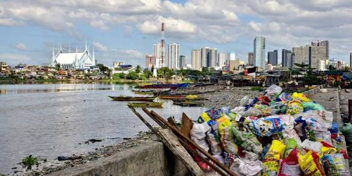
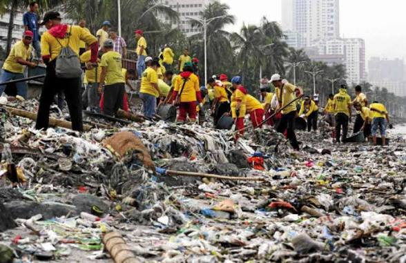
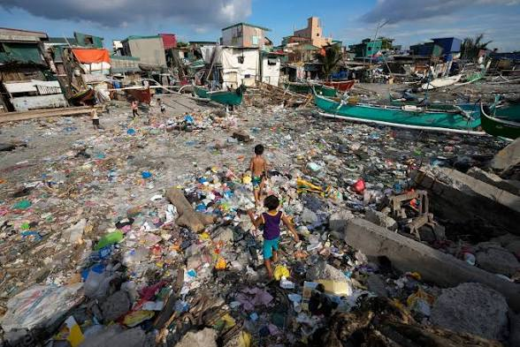

Overview of Philippine Waste Management
The Philippines has one of the most progressive waste management frameworks on paper, but the reality on the ground is a continuous work in progress.
The Blueprint (RA 9003): Passed in 2000, the Ecological Solid Waste Management Act puts the power in the hands of Local Government Units (LGUs). Households are supposed to segregate, Barangays (villages) handle composting and recycling, and cities handle disposal.
The New Era of Accountability: With the recent Extended Producer Responsibility (EPR) Act, the burden is shifting. Large companies are now legally required to recover and recycle the plastic packaging they put out into the market.
The Goal: Moving away from a "throw-away" culture and transitioning the archipelago into a sustainable, circular economy.

Challenges in Waste Collection & Disposal
Despite strong laws, the country generates over 14 million tons of waste annually, and the system is heavily strained.
Did You Know? Uncollected plastic waste is one of the leading causes of urban flooding in the Philippines, as it clogs city drains and waterways during typhoons.
The "Sachet Economy": Millions of Filipinos rely on small, single-use plastic sachets for daily goods (like shampoo and coffee). These are extremely difficult to recycle and flood the waste stream.
Logistical Gaps: While major cities have regular garbage trucks, remote coastal areas and low-income neighborhoods are often left behind, leading to illegal dumping and burning.
Landfills at Bursting Point: Many active sanitary landfills are rapidly reaching full capacity, and finding new land for garbage in a densely populated island nation is a massive hurdle.
The Informal Sector Risk: A huge portion of recycling is done by informal waste pickers. They provide a massive service to the country but often work in hazardous conditions without health protections.

Recycling & Community Initiatives
Where the official system struggles, local communities, NGOs, and creative entrepreneurs are stepping in with brilliant, localized solutions.
"Trash-to-Rice" Programs: Many local villages run barter systems where residents can trade clean, segregated plastic bottles or ecobricks for essential goods like rice and groceries.
The Junk Shop Network: The true heroes of Philippine recycling are the neighborhood junk shops and door-to-door bote-dyaryo (bottle and newspaper) buyers who recover tons of valuable scrap daily.
Upcycling Innovation: Social enterprises across the country are proving that trash is just a misplaced resource—turning plastic waste into construction bricks, school chairs, and fashion items.
Zero-Waste Champions: Several Philippine cities have gained international recognition for strictly enforcing plastic bans and achieving up to 80% waste diversion through aggressive localized composting.